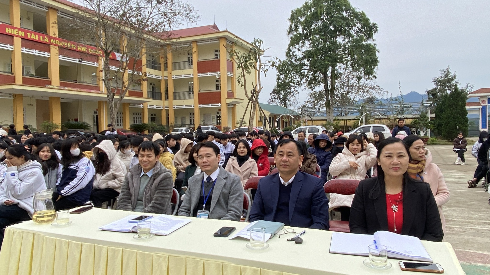
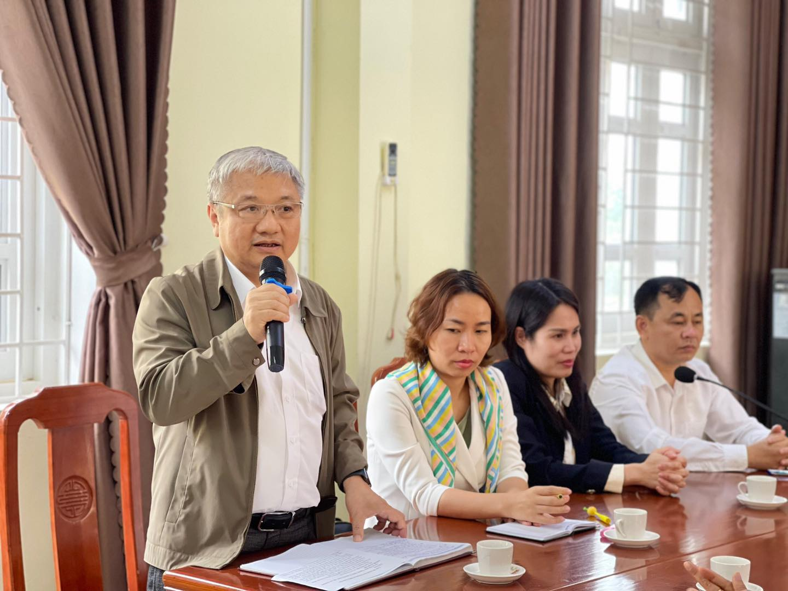
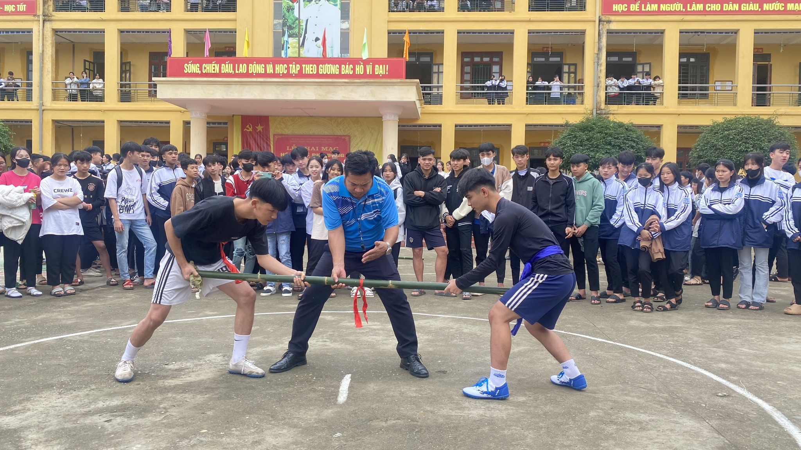
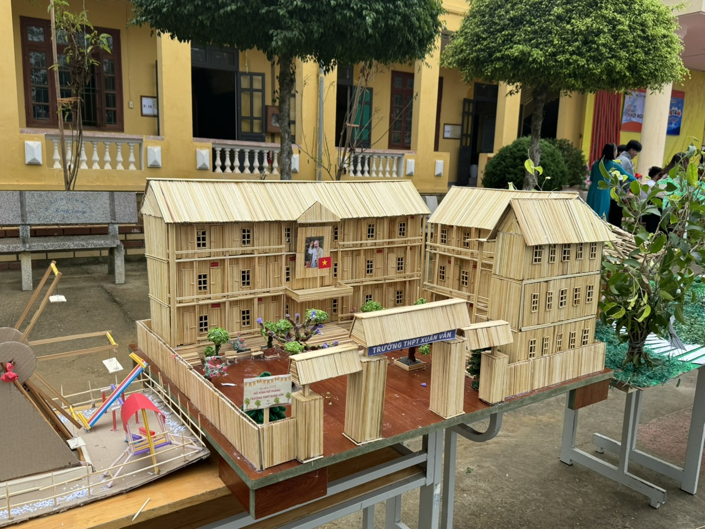
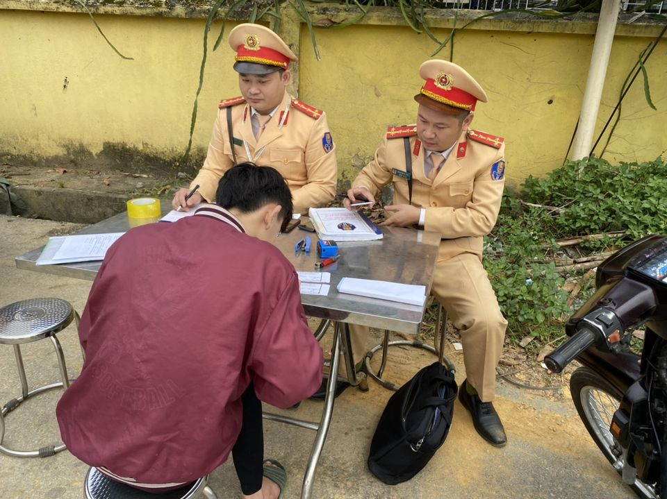

|  |
Trường THPT Xuân Vân sơ kết học kỳ I năm học 2023-2024.
Sáng nay, ngày 23/01/2024, trường THPT Xuân Vân tiến hành sơ kết học
kỳ I. Tại buổi sơ kết, Thầy giáo Nguyễn Ngọc Trinh, Bí thư Chi bộ,
Hiệu trưởng nhà trường đã ghi nhận sự nỗ lực cố gắng của Thầy và Trò
đã đạt được những thành tích đáng khích lệ tronghọc tập và rèn luyện
đạo đức và trong các cuộc thi như: QP-AN cấp tỉnh năm 2023; KHKT năm
2024; đặc biệt có cô giáo Lê Thị Thu Hiền đạt giải Khuyến khích cấp
quốc gia về cuộc thi viết về Những kỷ niệm sâu sắc về thầy cô và mái
trường do Báo GDTĐ tổ chức; và giải Khuyến khích cuộc thi Tìm hiểu
về cải cách hành chính năm 2023. Tại buổi sơ kết Đoàn TNCS HCM cũng
sơ kết trao thưởng cho các tập thể và cá nhân có thành tích trong
học tập và phong trào Đoàn.
|
|  |
Khoá Tập huấn thí điểm nhằm cung cấp kiến thức một cách hệ thống.
Từ ngày 19-24/01/2024 tại trường THPT Xuân Vân, tổ chức Room To Read
phối hợp cùng Nhà trường tổ chức Tập huấn thí điểm chương trình
"Nâng cao năng lực tư vấn tâm lý học đường cho giáo viên chủ nhiệm
trong trường trung học".Tại buổi tập huấn, các giáo viên chủ nhiệm
sẽ trao đổi, tương tác, lắng nghe chuyên gia chia sẻ những giải pháp
khắc phục khó khăn, vướng mắc, những tình huống thực tiễn gặp phải
tại các nhà trường. Từ đó, cán bộ, giáo viên nắm bắt những kiến
thức, kỹ năng cần thiết để áp dụng thực hiện tại trường và lớp chủ
nhiệm.
|
|  |
KHAI MẠC HỘI KHỎE PHÙ ĐỔNG 2023- 2024
KHAI MẠC HỘI KHỎE PHÙ ĐỔNG 2023- 2024 Cái quý giá nhất của một con
người là sức khỏe và trí tuệ. Bác Hồ kính yêu của chúng ta đã dạy
“Khỏe để xây dựng và bảo vệ Tổ quốc” và đẩy mạnh cuộc vận động “Toàn
dân rèn luyện thân thể theo gương Bác Hồ vĩ đại”. Thực hiện lời dạy
của Bác, chiều nay (ngày 17/01/2024) trường THPT Xuân Vân tổ chức
khai mạc Hội khỏe Phù Đổng cấp trường năm học 2023- 2024, nhằm đẩy
mạnh phong trào rèn luyện thể dục thể thao theo gương Bác Hồ vĩ đại,
nâng cao tinh thần rèn luyện thể lực, giáo dục nếp sống văn hóa lành
mạnh cho học sinh, đồng thời phát hiện, bồi dưỡng những học sinh có
năng khiếu và thành tích cao để chuẩn bị tốt lực lượng vận động viên
tham dự Hội khỏe Phù Đổng cấp tỉnh.
|
|
THỦ ĐOẠN NÚP BÓNG GAME ONLINE TỔ CHỨC ĐÁNH BẠC VÀ THAM GIA ĐÁNH BẠC TRỰC TUYẾN
Trong thời gian qua, thực tế cho thấy, các đối tượng tổ chức đánh
bạc qua mạng dùng nhiều thủ đoạn tinh vi để lôi kéo người chơi tham
gia. ⁉️ Nhiều người, đặc biệt là lứa tuổi thanh thiếu niên, khi tham
gia đánh bạc qua mạng thì LẠI NGHĨ RẰNG MÌNH ĐANG CHƠI GAME mà không
nhận thức được rằng mình đang đánh bạc.
Công an khuyến cáo người dân tuyệt đối không tham gia đánh bạc qua mạng. Hành vi tổ chức đánh bạc và tham gia đánh bạc đều là hành vi vi phạm phạm luật. |
|
|  |
STEM là phương pháp giáo dục tích hợp 4 bộ môn bao gồm: Khoa học, Công nghệ, Kỹ thuật và Toán học.
Thực hiện Kế hoạch năm học của nhà trường, ngày 04 tháng 12 năm 2023
trường Trung học phổ thông Xuân Vân đã tổ chức hoạt động trải nghiệm
STEM theo hướng: nội dung buổi trải nghiệm được thiết kế cụ thể, mô
tả rõ mục đích, yêu cầu tiến trình trải nghiệm và dự kiến kết quả.
Ưu tiên những hoạt động liên quan, hoạt động nối tiếp ở mức vận dụng
của các hoạt động trong dạy học theo kế hoạch dạy học của nhà
trường.
Hoạt động đã mang đến cho học sinh sân chơi bổ ích, giúp các em vận dụng kiến thức đã học ở trường trong các môn tự nhiên vào thực tế bằng những sản phẩm do chính mình tạo ra và thử nghiệm bằng sự trải nghiệm của chính bản thân học sinh. |
|  |
TĂNG CƯỜNG TUẦN TRA KIỂM SOÁT XỬ LÝ CÁC TRƯỜNG HỢP HỌC SINH VI PHẠM TRẬT TỰ AN TOÀN GIAO THÔNG
Hiện nay trên địa bàn huyện Yên Sơn tình trạng học sinh điều khiển xe mô tô, xe gắn máy, xe máy điện tham giao giao thông vi phạm về Luật giao thông đường bộ vẫn còn diễn ra. Đặc biệt là các hành vi vi phạm:
trường.
- Người từ đủ 14 tuổi đến dưới 16 tuổi điều khiển xe máy điện, xe gắn máy, xe mô tô; - Người từ đủ 16 tuổi đến dưới 18 tuổi điều khiển xe mô tô dung tích xi lanh 50cm3 trở lên; - Không đội mũ bảo hiểm cho người đi xe mô tô, xe máy; - Chở người ngồi trên xe không đội mũ bảo hiểm cho người đi xe mô tô, xe máy; Điều khiển xe không có gương chiếu hậu bên trái người điều khiển. |